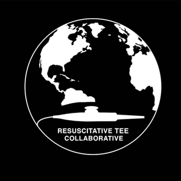

Resuscitative TEE Collaborative Research Network
The rTEECoRe is a multi-institutional collaborative research network committed to accelerating outcome-oriented research and knowledge translation on the use of transesophageal echocardiography in emergency and critical care settings.
Bringing together clinicians and scientists across leading academic medical centers.
Focused on generating evidence that directly improves patient outcomes in resuscitation.
Harmonizing data collection across institutions to enable rigorous, reproducible research.
Providing shared research infrastructure and making data accessible to the scientific community.
Formed in 2019 as an initiative of the Resuscitative TEE Project, rTEECoRe was established to address the critical need for rigorous, multicenter evidence on the use of TEE in acute care settings.
Transesophageal echocardiography has emerged as a powerful tool for assessing circulatory failure, hemodynamic monitoring, evaluating hypoxemia, procedural guidance, and cardiac arrest resuscitation. Our network exists to build the evidence base that clinicians need.
About rTEECoReEnable inter-institutional partnerships among clinicians and researchers across the country.
Harmonize reporting standards and data elements across participating institutions.
Offer shared tools and systems for data management, analysis, and storage.
Make collaborative datasets accessible to qualified clinicians and scientists.